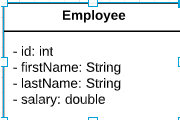

In a previous task, we implemented our own sorting algorithm to sort an array of int values. When it comes to
sorting numeric values, and even string values, sorting can be pretty straightforward. However, there are many
occasions where we may need to sort a collection of objects that have no natural ordering. To do this we need to
leverage either the Comparator or Comparable interface. This task will have us focus on
the former.
This task is more involved than previous ones, as you will need to implement logic across three provided classes.
The first part of this task will require that you provide an implementation of an Employee object. Please refer to
the provided image for assistance with implementing this class. The Employee class should implement the
POJO design pattern properly.

After you have implemented the Employee class, you should move on to implementing the
EmployeeComparator class. If two employees have the same salary, then they should be ordered based upon
their last names. Once that is complete, you should implement the Task.sortEmployeesBySalary method.
Once you have implemented a solution, you can hit the Check button below to run your implementation
against some unit tests provided by your trainer.
With regard to the Employee class, do not deviate from the implementation details provided to you in
the image!
Remember that POJOs will need appropriately named getters and setters, based upon the private fields of the class.
As well as overridden hashcode, equals, and toString methods.
There are some unit tests that ensure that invalid values cannot be set for the id or salary of the
Employee class. Be sure to account for this in your constructors and setters.
The String class implements the Comparable interface, which may come in handy for you.
As always, remember to account for your base cases within your task implementation.